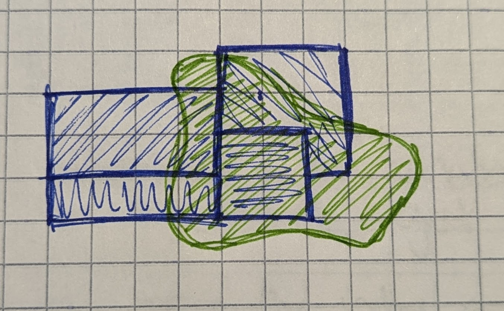
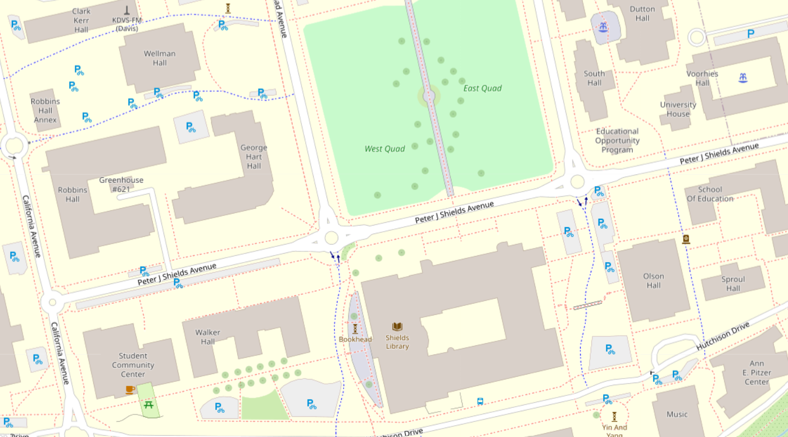

2 Vector
2.1 Exercise
Draw a map on a piece of paper. It could be a map of how you got to this workshop, or how to get to your favorite hiking spot, or of all the mochi doughnut locations in downtown. The topic doesn’t really matter. Just draw a map of your choosing.

Above: a sketch of Census tracts overlayed with a travel time polygon.
How did you represent your data? Did you use lines and maybe squares or circles? When asked to draw a map on paper, people usually use the vector data model to represent their ideas.
Why? Vector data is best for discrete objects. The prompt asked you to think about discrete things - buildings, routes, etc. - so you intuitively picked a data model that worked well for this kind of data.
2.2 Description
Geometry Representation: Points, Lines, & Polygons
Attributes Representation: Tables
The geometry is usually visually represented as images (points, line, and polygons) but the data is actually stored numerically inside the file as a series of coordinate pairs. The data only covers the place where there is data, not the spaces in between the points, lines, or polygons. Compare this with Raster data in the upcoming sections.
The choice to represent your data as a point, line, or polygon depends on a couple of factors:
- The nature of the object in question. Roads will almost always be lines.
- The scale of the map. A city will be a polygon when you are zoomed in. But if you are mapping cities at the scale of the whole globe, points are probably a better choice.
2.2.1 Examples
2.2.1.1 Picnic Day Fun
Let’s take a made-up example scenario for consideration. Imagine you are working on a new City of Davis program promoting picnicking at local parks on Picnic Day. Your goal is to encourage people to get takeout from local restaurants and eat in a nearby green space. To help people plan, you might make a map with the following vector datasets:
| Geometry | Example | Attributes |
|---|---|---|
| Points | Restaurants | name, region, price range |
| Lines | Roads | name, speed limit, type |
| Polygons | Parks | name, year opened, playground (Y/N) |
2.2.1.2 OpenStreetMap
Here is an example of real vector data in the OpenStreetMap dataset:

Above: A screen shot of OpenStreetMap showing the area of the UC Davis campus around the Quad.
Notice how the larger areas (relative to the scale of the map) like buildings and green spaces are represented with polygons. Bike routes and pedestrian paths are lines. Smaller objects like fountains and sculptures are points represented with icons. You can see “Bookhead” on the west side of Shields Library, with an admittedly silly icon. Larger roads look like skinny polygons but are actually lines styled with a wide stroke.
2.3 File Formats
Here are some common file formats you’ll encounter when working with vector data:
| Name | File Extension | Notes |
|---|---|---|
| Shapefile | .shp (with .shx, .dbf, etc.) | Keep all the “sidecar” files together |
| Geopackage | .gpkg | Open format, easy organizing |
| Geojson | .geojson | Open format, human readable |
| Google Keyhole Markup Language (KML) | .kml, .kmz | Google’s spatial data format |
| GPS eXchange Format | .gpx | A common GPS file type |